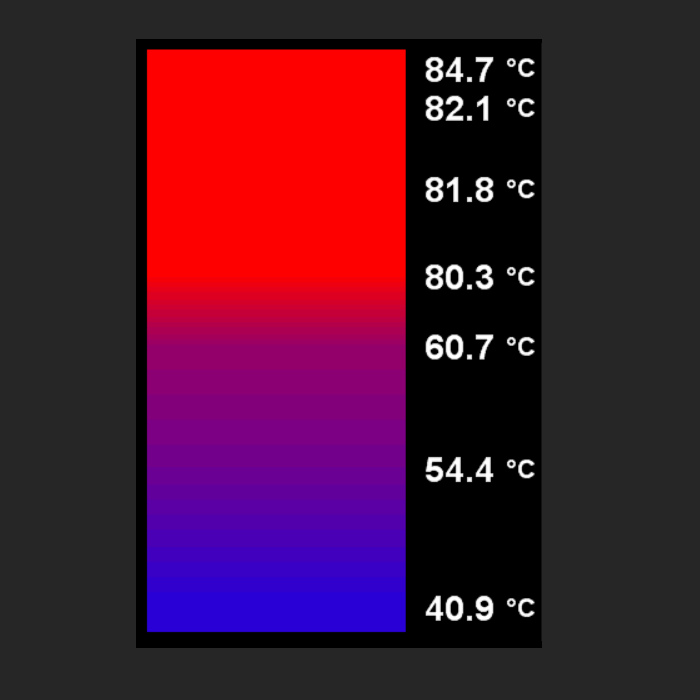

| Hobby | |

|
Gyerekkoromban nagyon sokat bicikliztem a családommal, már egész kis koromban elvittek biciklitúrára. Valószínüleg innen jön a biciklizés és a természet utáni szeretetem. Éppen ezért manapság ha tehetem, elmegyek valamelyik hegységbe, kialakított túraútvonalra vagy egy terepes részre és biciklizek egyet. Nagyon hamar ki tudja kapcsolni az embert, oldja a hétköznapi streszt és még sorolhatnám a pozitív hatásait. Sajnos egyre kevesebb időm jut ilyen túrákra. |
|
Másik hobby-m a mikrokontrollerek világa: Még pár éve rendeltem Arduinot egy teljesen hétköznapi dologra, de azóta is jó pár projektet valósítottam meg mikrokontrollerek segítségével. Legutolsó projektem az itthoni fűtésrendszer tartályának a színátmenetes hőmérséklet kijelzése volt. Tervezem a fűtésnek a teljes automatizált vezérlését kialakítani és leprogramozni, de ez nem csak szoftver oldalról, hanem a vezérlés beavatkozó oldaláról is bonyolult. A kihívást az ilyen munkákba nekem a programozás jelenti, ugyanis nagy a támogatottsága az arduinonak, mégis sok dolgot saját magamnak kell kitalálnom, hogy úgy működjön ahogy azt én szerentém. |
 |